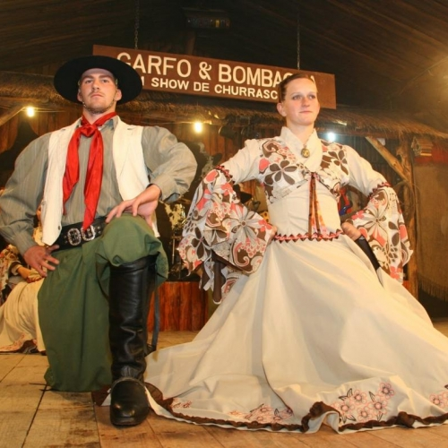
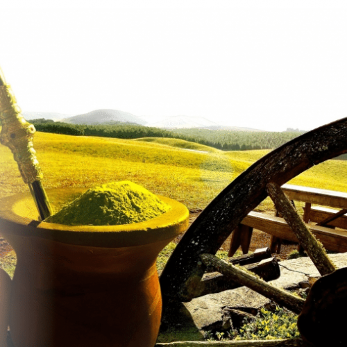
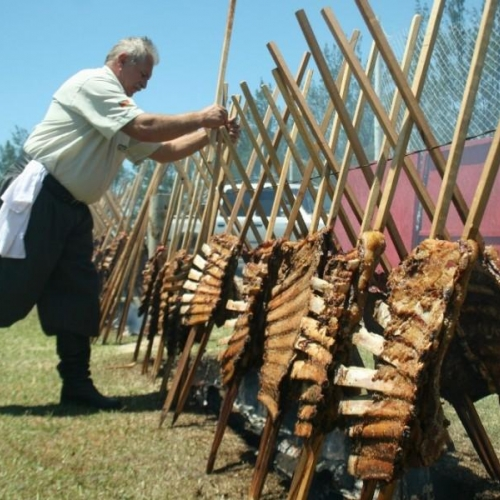

Vêtements Gaúcha
La culture authentique du peuple et ses expressions reposent sur des traditions, sur des connaissances acquises en vivant en groupe, ajoutées aux éléments historiques et sociologiques. Leur héritage et leur tradition, y compris leur façon de s'habiller, sont transmis aux générations suivantes, sous réserve de changements spécifiques à chaque époque et à chaque circonstance.

L'homme du Rio Grande do Sul a adapté ses vêtements en fonction de ses besoins et de son style de vie. Il est clair que les costumes, à travers l'histoire, acceptent les processus de modernisation et de transformation qu'une culture peut avoir. La culture est vivante et, de son vivant, elle change. Ces changements, légués au gaucho en plus d'un héritage, d'une beauté et d'une identité. Si les coutumes sont constamment modifiées au cours de l'histoire, rien de plus clair que les costumes ont eux aussi changé, tout en conservant leur racine.
Chimarrão
Le chimarrão est une tradition gaucho qui accompagne la pivoinade de la campagne et de la ville au quotidien, le climat presque toujours froid favorise la pratique de cette autre habitude qui en plus d'être savoureuse est vivifiante et aussi fraternelle car la gourde passe de main en main, donnant séquence aux troves et conversations. Et c'est un excellent partenaire de barbecue, car il est diurétique et digestif.

Barbecue
Selon les faits historiques, c'est au XVIIe siècle que la forme de barbecue gaucho a été créée au Rio Grande do Sul, qui s'est aujourd'hui répandue dans tout le pays et jouit même d'une reconnaissance et d'une appréciation internationales. De plus, il est devenu synonyme de fête et de fraternisation entre famille et amis. La découverte du barbecue est attribuée aux Indiens qui habitaient la côte des trois Amériques. Ils rôtissaient la viande à l'extérieur, au feu de pierre à l'aide d'un gril en bois vert, mais c'est dans la région de la grande pampa que le barbecue a trouvé son environnement idéal.

Le bétail a toujours été l'une des plus grandes richesses de l'Uruguay, de l'Argentine et du sud du Brésil, dans la soi-disant région de la pampa, et le fait de s'occuper du bétail a éloigné les hommes de la campagne pendant de longues périodes de chez eux. Le barbecue était un moyen plus pratique de faire un repas, car tout le nécessaire pour préparer le repas était à portée de main: un bon couteau aiguisé, un feu préparé dans un trou creusé dans le sol (feu dans le sol), une brochette de bâton qui il peut être fraîchement préparé avec des branches, un morceau de viande généreux et du gros sel. En fait, le gros sel était et est toujours utilisé comme complément alimentaire pour le bétail. La viande était coupée en petits morceaux et servie, commençant la façon de servir la viande appelée rodízio. Et la manière gaucho de préparer le barbecue a été créée. Au début, le barbecue tel que nous le connaissons aujourd'hui était très rare, car il n'y avait pas de souci avec le commerce de la viande bovine, mais avec le cuir et le suif. À Rio Grande do Sul, le barbecue fait toujours partie de la culture gaucho, et est également toujours présent dans la vie du gaucho campeiro.